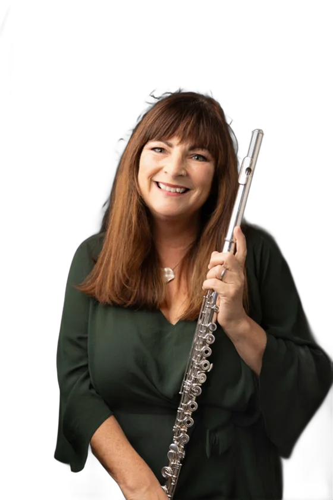
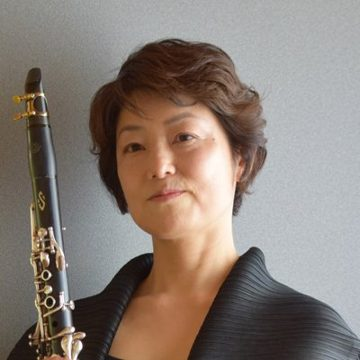
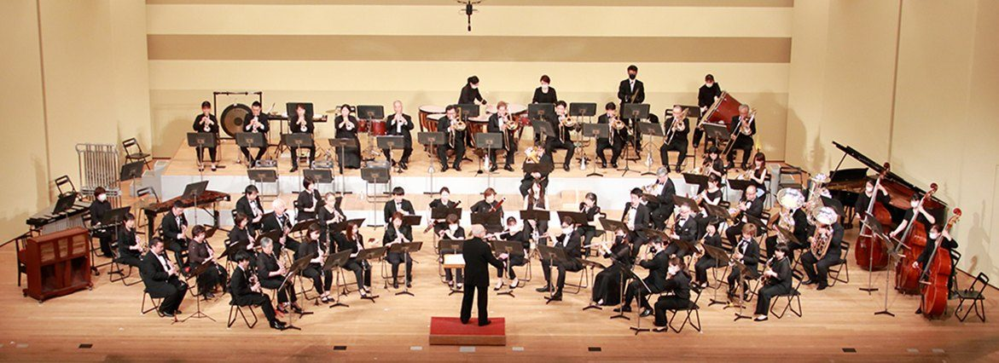
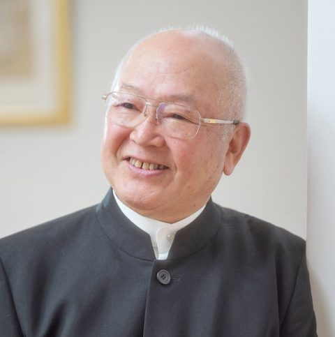

トレーシー・ドイルフルート
Tracy Doyle, fluteピュージェット・サウンド大学音楽学部長・フルート教授。演奏・教育・地域とのつながりを大切にし、新生児の親と学生が歌をつくる「ララバイ・プロジェクト」を主導。ソロや室内楽で幅広く活躍し、日米合同の「アプリシティ・トリオ」創設メンバーとして、米国・オーストラリア・日本で演奏を重ねている。

このたび、アメリカ・ワシントン州タコマから、フルート奏者のトレーシー・ドイルさんと、打楽器奏者のジェイムス・ドイルさんご夫妻をお迎えして、国際交流コンサートを開催いたします。
お二人は、タコマの大学で教鞭をとるかたわら、ジュニアオーケストラをはじめとする青少年の音楽活動にも長く携わってこられました。その中で、近年、中学生・高校生や若い世代が地域の文化活動に参加する機会が少なくなっていることを、心配されています。
これは日本でも同じように感じられていることで、「もしかすると世界中で起きていることなのかもしれない」と、私たちと思いを分かち合いました。そして、お二人から「日本の中高生や若い皆さんと一緒に考えてみたい」というご提案をいただき、このコンサートが生まれました。
音楽を通して海を越えて手をつなぎ、地域の音楽文化のこれからを、皆さまと一緒に考えるひとときになれば幸いです。
ホスト：菅生千穂 パネリスト：ドイル夫妻、団員有志、近隣の中高生・一般から4〜5人
原則として英語で話し合います（できれば音楽活動の経験がある方）。
トレーシー・ドイル（Fl）、ジェイムス・ドイル（Perc）、柏木 薫（Pf）、菅生千穂（Cl）
ワコーズウインド団員によるソロ・アンサンブル
ピュージェット・サウンド大学音楽学部長・フルート教授。演奏・教育・地域とのつながりを大切にし、新生児の親と学生が歌をつくる「ララバイ・プロジェクト」を主導。ソロや室内楽で幅広く活躍し、日米合同の「アプリシティ・トリオ」創設メンバーとして、米国・オーストラリア・日本で演奏を重ねている。
太平洋岸北西部を拠点とする打楽器奏者・教育者。世界各地で演奏し、シアトル交響楽団のシリーズや「中之条ビエンナーレ」にも出演。元・米国空軍「ゴールデン・ウェスト・バンド」首席打楽器奏者。現在はピュージェット・サウンド大学で教え、パーカッション・フェスティバルを主宰。「アプリシティ・トリオ」でも活躍。
東京音楽大学ピアノ科、英国王立音楽院大学院修了。欧州やジャマイカでの演奏、北欧でのピアノ指導を経て帰国。語りながら弾くアルバム『語りピアノ』や、菅生千穂（Cl）との『音の詩画集』など多数発表。

伊賀市生まれ。群馬大学共同教育学部准教授。国内外で演奏し、新作委嘱や彫刻・ダンスとの共演など、形にとらわれない音楽づくりに取り組む。「アプリシティ・トリオ」などでCDをリリース。日本クラリネット協会理事。

2003年、菅生和光の還暦記念コンサートのために結成。その後も氏の指揮の下、全国から有志が集まり練習を重ねてきた吹奏楽団。令和元年より Wako’s Music Holiday シリーズをスタートさせ、芸術音楽から現代曲、ポピュラー作品まで、豊かな表現を求めて定期的に演奏会を開いている。

さまざまな音楽活動が評価され、JBA優秀指揮者賞、文化庁地域文化功労賞、三重県文化大賞、伊賀市政功労賞を受賞。日本吹奏楽指導者協会名誉会員、三重県吹奏楽連盟顧問、クラリネットプレイヤーズ三重代表、津市消防音楽隊ディレクター。日本クラリネットフェスティバルの実行委員長も務めた。伊賀市山出勝因寺住職、大僧正。
ワコーズミュージックホリデイ実行委員会
〒518-0625 三重県名張市桔梗が丘5-8-80-1
ミュージックガーデン 米田眞理子方
TEL＆FAX 0595-66-1608
国際交流コンサート第1部の合同演奏に出演する「国際交流選抜コンサートバンド」のメンバーを、オーディションで募集します。中学生・高校生から一般の方まで、どなたでも応募できます。応募された方には、コンサートの入場券を2枚さしあげます。
下のフォームに入力すると、オーディション申込書ができあがります。保存した申込書を印刷して、郵送またはFAX（0595-66-1608）で事務局へお送りください。
入力した内容は、このページの中だけで使われます。どこにも送信・保存されません。
内容を確認して、保存してください。